Our Mission
To deliver authentic, safe and effective Ayurvedic care that heals the root cause of illness and restores lasting balance in body and mind.
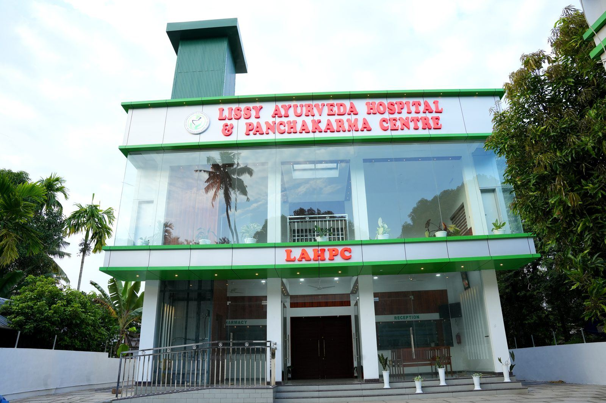
One Health
One Future
The fullness of tradition, the comfort of modern care.
Lissy Ayurveda Hospital & Panchakarma Centre (LAHPC) is located at Ithupadam, in Ward 23 of Mattathur Grama Panchayat, near Kodakara in Thrissur district. Kerala is recognised worldwide as the home of classical Ayurveda, and our hospital carries that tradition forward with sincerity and care. The hospital was inaugurated on 24 September 2026 by Sri. Ramesh Chennithala, Home Minister, Government of Kerala, after a blessing ceremony on 23 September led by Mar Pauly Kannukkadan, Bishop of the Diocese of Irinjalakuda.
This is a time when Ayurveda and Panchakarma are gaining wide acceptance and growing demand across the world. LAHPC was founded to bring quality Ayurvedic care to the people of Thrissur in step with that opportunity, with a quality management system that is ISO 9001:2026 certified.
We treat every patient as an individual. Our chief physician, Dr. Litty C.J., begins with a detailed consultation to understand your constitution (prakriti), your current imbalance (vikriti) and the root cause of your condition, and only then prescribe a personalised programme of therapies, herbal medicines, diet and lifestyle guidance.
Lissy Ayurveda Hospital & Panchakarma Centre at Ithupadam, Ward 23 of Mattathur Grama Panchayat, was inaugurated by Sri. Ramesh Chennithala, Home Minister, Government of Kerala. Sri. K.K. Ramachandran, MLA, Puthukkad, presided over the function and Sri. A. Prasad, Deputy Mayor, Thrissur Corporation, was the chief guest. Dr. Litty C.J. welcomed the gathering.
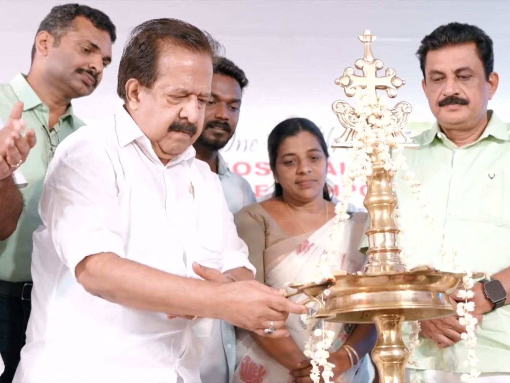
24 September 2026Home Minister, Government of Kerala
The Home Minister lit the ceremonial lamp and formally opened Lissy Ayurveda Hospital & Panchakarma Centre at Ithupadam, Mattathur, in the presence of Sri. K.K. Ramachandran, MLA, Puthukkad, who presided, and Sri. A. Prasad, Deputy Mayor, Thrissur Corporation, the chief guest.
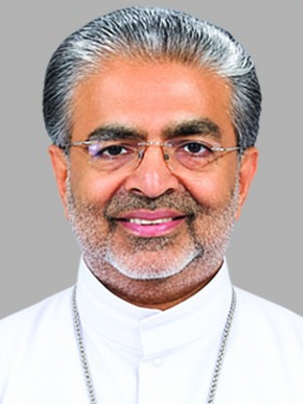
23 September 2026Bishop, Diocese of Irinjalakuda
On the eve of the inauguration, His Excellency Mar Pauly Kannukkadan, Bishop of the Diocese of Irinjalakuda, blessed the new hospital at Ithupadam, Mattathur, invoking God’s grace on the healing work that Lissy Ayurveda Hospital & Panchakarma Centre set out to do.
Inauguration of LAHPC by Sri. Ramesh Chennithala, Home Minister, 24 September 2026.
Chief Physician Dr. Litty C.J. addresses the gathering at the inauguration.
The inauguration was covered by Kerala's leading dailies. Click a clipping to view it in full.
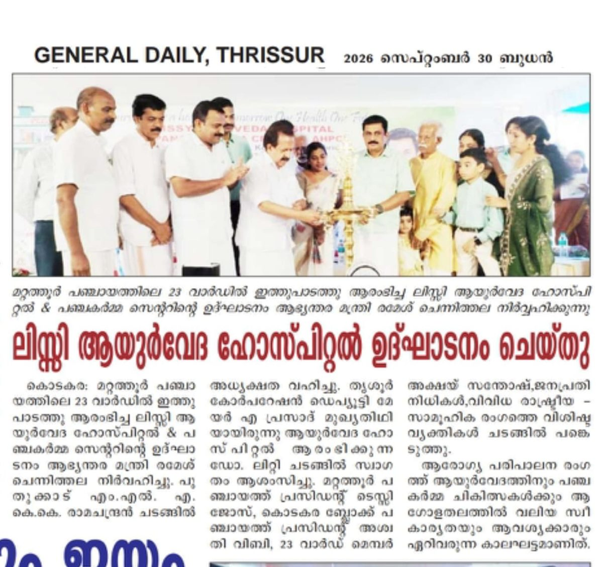
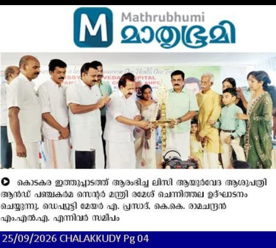
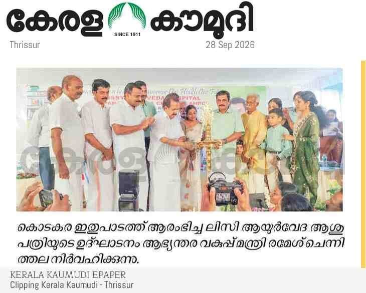
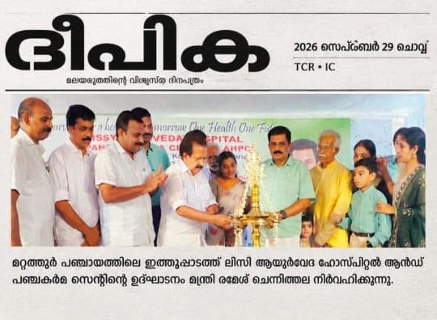
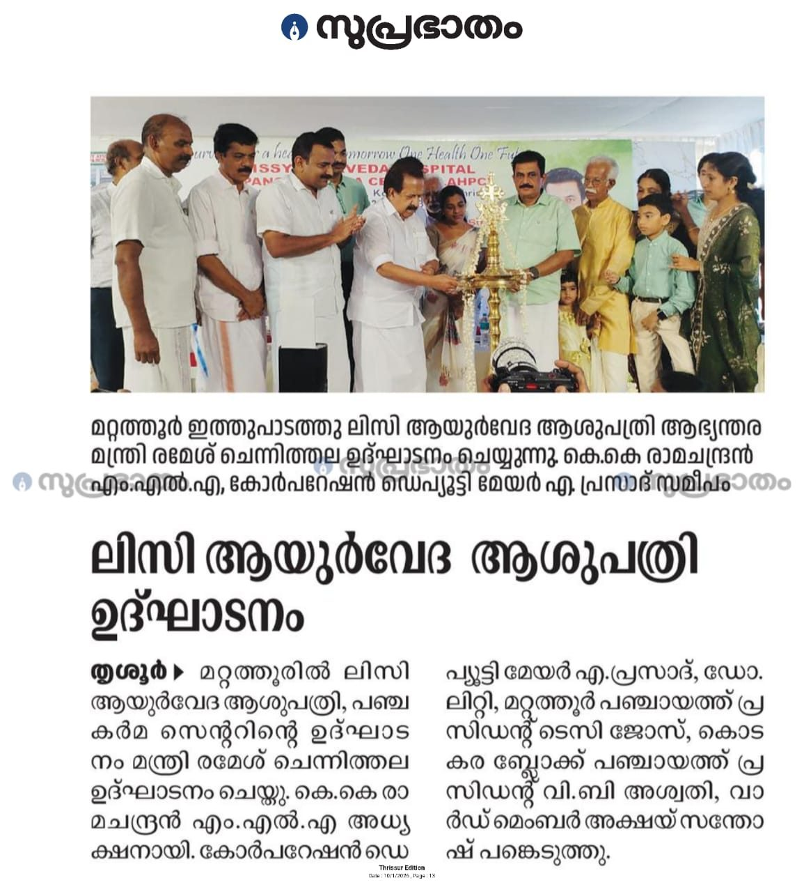
The opening was also reported in Veekshanam, Express and other regional dailies.
To deliver authentic, safe and effective Ayurvedic care that heals the root cause of illness and restores lasting balance in body and mind.
Ayurveda for a healthier tomorrow: a community where time-tested natural medicine is the first choice for wellness, prevention and recovery.
Honest advice, personalised treatment, genuine medicines and respectful care for every patient who walks through our doors.
A hospital led by a qualified Panchakarma specialist and supported by professionally qualified paramedical staff and trained therapists.
Leads diagnosis and every treatment plan at LAHPC, from classical Panchakarma to women's health, eye care and lifestyle disease management.
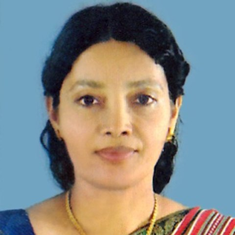
The hospital bears her name. As proprietor, she set out to bring authentic, affordable Ayurvedic care to the people of Mattathur and Kodakara.
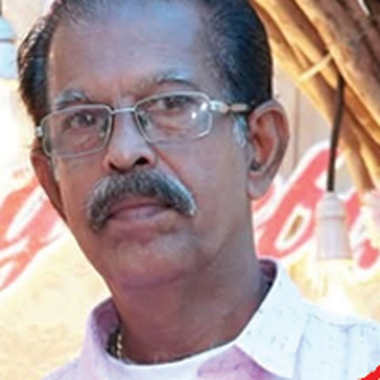
Oversees the day-to-day running of the hospital, its facilities and patient services.
Ayurveda understands health as harmony between the three vital energies, Vata, Pitta and Kapha. When they are in balance, the body heals itself. When they are disturbed by diet, stress, climate or lifestyle, disease begins. Our treatments gently bring the doshas back into balance.
We combine classical Panchakarma purification, Kerala's unique external therapies, herbal medicines, and advice on food, sleep and daily routine (dinacharya) so the benefits last long after you leave the hospital.
See Our TreatmentsAir & space. Governs movement, nerves and circulation.
Fire & water. Governs digestion, metabolism and heat.
Earth & water. Governs structure, strength and immunity.
Health, with nature's care, through LAHPC. Our systems and our hospital are independently certified and registered.
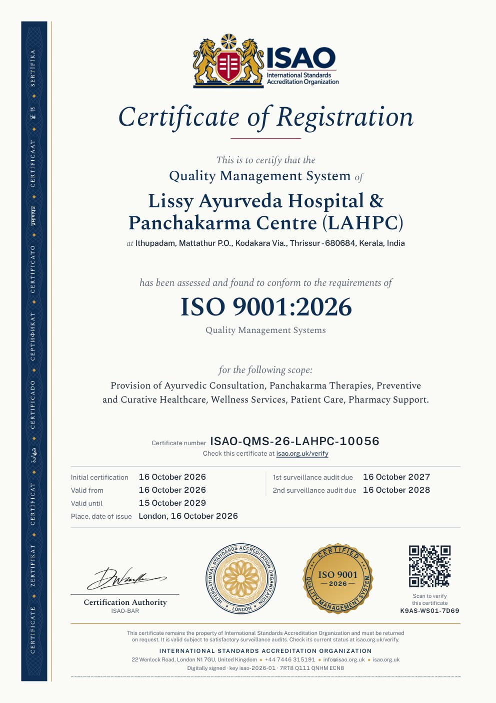
ISAO-QMS-26-LAHPC-10056BFHP02-G081103-00003-2026BFIF01-G081103-00119-2026Ward, single, double and air-conditioned rooms with WiFi for residential treatment programmes.
Monday to Saturday, 9:00 AM – 1:00 PM and 2:00 PM – 5:00 PM, with our chief physician.
Dedicated, hygienic rooms for Panchakarma and Kerala therapies.
Genuine Ayurvedic medicines and medicated oils on site, with our own licensed manufacturing of medicines and oils.
Yoga and diet-regulated meals prepared for patients as part of their treatment.
Professionally qualified doctor and paramedical staff, with a reception to guide you.
Book a consultation at LAHPC, Thrissur. We will call you back to confirm your appointment.